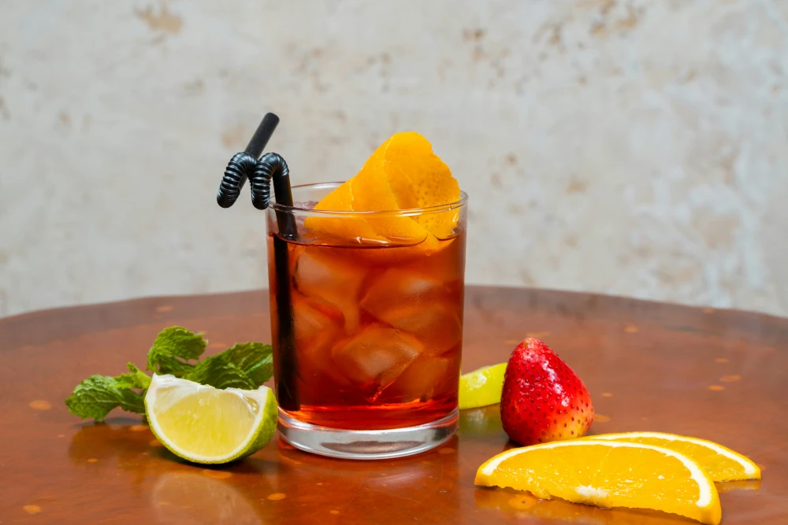

Vindrinkar i sommar
2025-04-22
Sommaren är här och vad passar inte bättre på sommaren än drinkar baserade på vin. Dom är inte för starka, smakar gott och är uppfriskande i solskenet och värmen. I Spanien är det populärt med vin som är blandat med något som sangria. Här kommer några tips på vinbaserade drinkar du kan njuta av i sommar!
Till 4 glas Sangria behöver du 1,5 dl apelsinjuice, 2 kanelstänger, 1 msk socker, 1 flaska rött, fruktigt vin, 1 apelsin, 1 äpple och is. Börja md att koka upp apelsinjuice, socker och kanelstänger och låt det svalna. Skär frukterna och lägg i en kanna, häll i sockerlagen och vinet och ställ den i kylen så att den blir kall. Servera i glas med is.
Testa den supeerenkla Tinto de Verano. Här blandar man endast en del vin, en del citronbaserad läsk som sprite, 7up, is och garnera med en citron eller apelsinskiva.
En variant på drink med vitt vin är Spritzer eller "Dagens" som den också kallas. Till den behöver man 1 flaska torrt vin, 5 dl fruktsoda och is. Det räcker till cirka 6 glas. Garnera med t ex en limeskiva.
Så ta och testa en vindrink i sommar eller allihop!